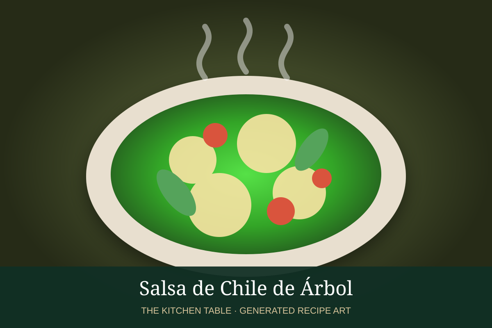

← Back to all recipes
SAUCE · MEXICAN
Salsa de Chile de Árbol
A fiery, smooth salsa centered on toasted chile de árbol with tomato, garlic, and a touch of acid.
20 minMakes about 1 1/2 cups

Photo: Pinterest / Pizca de Sabor
Ingredients
- 12 dried chiles de árbol
- 3 Roma tomatoes
- 2 garlic cloves
- 1/4 white onion
- 1 tbsp neutral oil
- 1 tbsp vinegar or lime juice
- 1 tsp kosher salt
Preparation
- Toast the chiles briefly in a dry pan; remove before they darken too much.
- Roast tomatoes, garlic, and onion until softened.
- Blend with chiles, vinegar, and salt until smooth.
- Fry in hot oil for 3 to 5 minutes.
- Cool slightly and use sparingly; this salsa is intentionally hot.